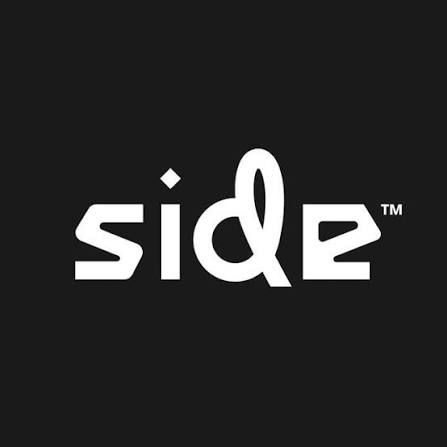

Senior QA Tester
SIDE
Dec 2025 – Today
- Test multiple AAA titles across PC, Steam, PlayStation, Xbox, and Nintendo Switch 2.
- Use Jira and TestRail to document, track, and manage defects through the full lifecycle.
- Execute exploratory, smoke, and regression tests to validate stability and functionality.
- Identify game-breaking bugs, reproduction steps, and platform-specific issues under certification standards.
- Collaborate with dev/QA teams to verify fixes and ensure a seamless player experience across hardware.